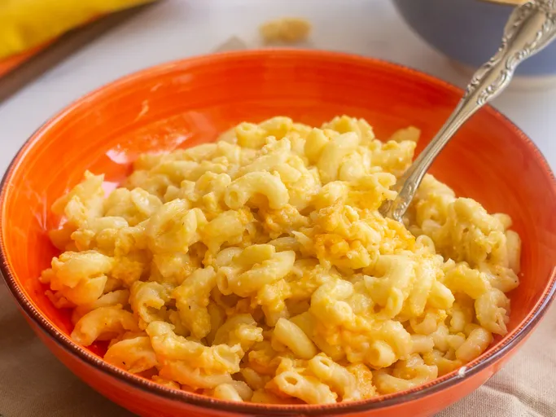

I will show you how to make Mac and Cheese here in simple steps!
- Boil the pasta in salted water, then drain and transfer to the slow cooker
- Stir in the butter, seasonings, and about half of the Cheddar
- Whisk the evaporated milk and eggs together, then stir into the pasta
- Whisk the milk and the soup together, then stir into the pasta
- Sprinkle the remaining cheese over the pasta mixture and garnish with paprika
- Cook on Low for 2 and half hours to 3 hours
Home